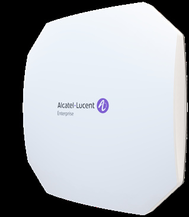

R（触发场景）
- Wi-Fi 7 入门但需要 BLE/Zigbee IoT 射频 + FTM 精确定位（医疗资产追踪等）（C9）
- 接入层 5GE 多千兆 + at/bt 供电；上联要 MACsec 加密
- 1501（砍配版）与 1521（中端）之间的取舍（C1/C7）
I（核心理念)
Wi-Fi 7 入门加强版：三服务射频 2x2x3（9.328Gbps）+ 集成 Bluetooth 5.4/Zigbee 射频，1x 5GE PoE 上联（支持 802.1ae MACsec），FTM（802.11mc/az）精确测距；at 23.4W 即可运行、bt 更稳（P13，原文p77 /原文p78 ）。
A1（选型差异）
- vs AP1501：
加 BLE 5.4/Zigbee、FTM、5GE（对 2.5GE）、MACsec、TPM2.0、512 压缩块确认、每射频 16 SSID（对 8）、768 客户端、bt 兼容（1501 仅 at） - vs AP1521：
1521 升 5GHz 4x4（12.2G）、专用三频扫描射频、10GE+GE 双口、1280 客户端、必须 bt 40.2W；1511 是"入门+IoT"，1521 是"中端+防护" - 定位口径：
要 BLE 定位 + FTM 但预算有限 → 1511 是 Wi-Fi 7 代最佳性价比点（C9）
A2（规格速查表）
| 项目 | 规格 | 页码 |
|---|---|---|
| 射频架构 | 四射频：6GHz 2x2:2（5.76G，2SS EHT320）+ 5GHz 2x2:2（2.882G，2SS EHT160）+ 2.4GHz 2x2:2（688Mbps）+ BLE 5.4/Zigbee（6dBm/-93dBm，内置全向天线 4.3dBi）；无专用扫描射频 | 原文p80 |
| 聚合速率 | 9.328Gbps | 原文p77 |
| MIMO/速率档 | MLO、OFDMA、MU-MIMO、4096-QAM、512 Compressed Block Ack、TxBF；EHT20-320；FTM（802.11mc/az） | 原文p78 /原文p80 |
| 频段 | 2.4G/5G 四段/6GHz 四段 | 原文p80 |
| 以太网口 | 1x 多千兆 100M/1G/2.5G/5GE（802.3bz）上联 Eth0，PoE 802.3bt，EEE，MACsec；1x USB 2.0 Type-C + USB-C console | 原文p80 |
| PoE/供电 | at/bt 兼容，最大 23.4W（single at）；DC 40-57V | 原文p82 |
| USB-IoT | 1x USB 2.0 Type C（5V 500mA） | 原文p80 |
| 蓝牙 | Bluetooth 5.4/Zigbee + FTM | 原文p80 |
| 天线 | 内置全向：5.6dBi @2.4G / 5.9dBi @5G / 6.4dBi @6G | 原文p81 |
| 发射功率 | 聚合 26dBm@2.4G / 26dBm@5G / 27dBm@6G；巴西 24dBm | 原文p80 |
| 工作温度 | 0°C ~ 50°C | 原文p82 |
| Mount | 吊顶/壁装，套件另购（AP-MNT-IN-BE/CE/WE） | 原文p82 |
| 容量 | 每射频 16 SSID；每射频 256 客户端，合计 768/AP | 原文p83 |
| 尺寸重量 | 190x190x38mm，764g；MTBF 1,075,632h（122.79 年） | 原文p83 |
| 管理平台 | Terra 5K / Cirrus 12K（单租户）/ Express 集群 255；OV2500 兼容 4K；SNMP 仅 v2 | 原文p83 |
| 安全 | TPM 2.0、WPA3 CNSA/SAE、OWE、DPI、wIPS/wIDS、MACsec Eth0（防中间人） | 原文p78 /原文p81 |
| 订购 | OAW-AP1511-RW（禁 US, Japan）/ -US | 原文p84 |
E（适用场景）
- 医疗 RTLS：
BLE/Zigbee + FTM 精确测距的资产/人员追踪（C9，原文p80 ） - 分支 Wi-Fi 7 + IoT 楼宇自动化（BLE 5.4 传感器生态）
- 上联链路合规：
MACsec 保护 AP 到接入交换机路径（P23，原文p78 ）
B（限制与坑）
- 无专用扫描射频：
全时 wIPS 防护仍缺，须上 1521/1540 - SNMP 仅 v2（X12 关联，原文p83 ）；Wi-Fi 7 代通病
- 管理规模数字随 OmniVista 版本增长，下单前与 ALE 核实（X24，原文p83 ）
- 单网口单 5GE：
布线只有 GbE 时 5GE 降速跑，等于多付钱 - 吊装套件另购（X20，原文p82 ）
来源：bp-stellar-ap-datasheets fulltext.md p77-86；verified.md C9/P13/P23/P25/X18/X20/X24/F1/F5